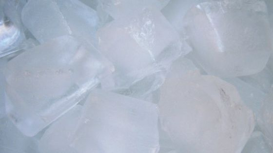

Ice Cubes

Description
Mix 2 cups of water with 2 tablespoons of water. Add more water to taste. "I wish there was a Crock-Pot version
of this recipe. I work long hours and I just dont have the time to invest in this kind of hands-on cooking."
-hollyluya
Ingredients
- 2 cups water (approximately)
- 2 tablespoons water (additional if needed)
Steps
- Empty the ice cubes that are left in the trays (if there are any left) into the bin.
- Take the trays over to the sink and fill them with cold water. (Hot water will freeze faster and more
clear).
- Place the water filled ice trays back in the freezer.
- Replace the ice bin if you had to remove it.
- Shut the door to the freezer.
- Be sure to leave for around 4-6 hours at least to make sure it is frozen.
- If you want to experiment, you can freeze things like fruit infused waters or juices.